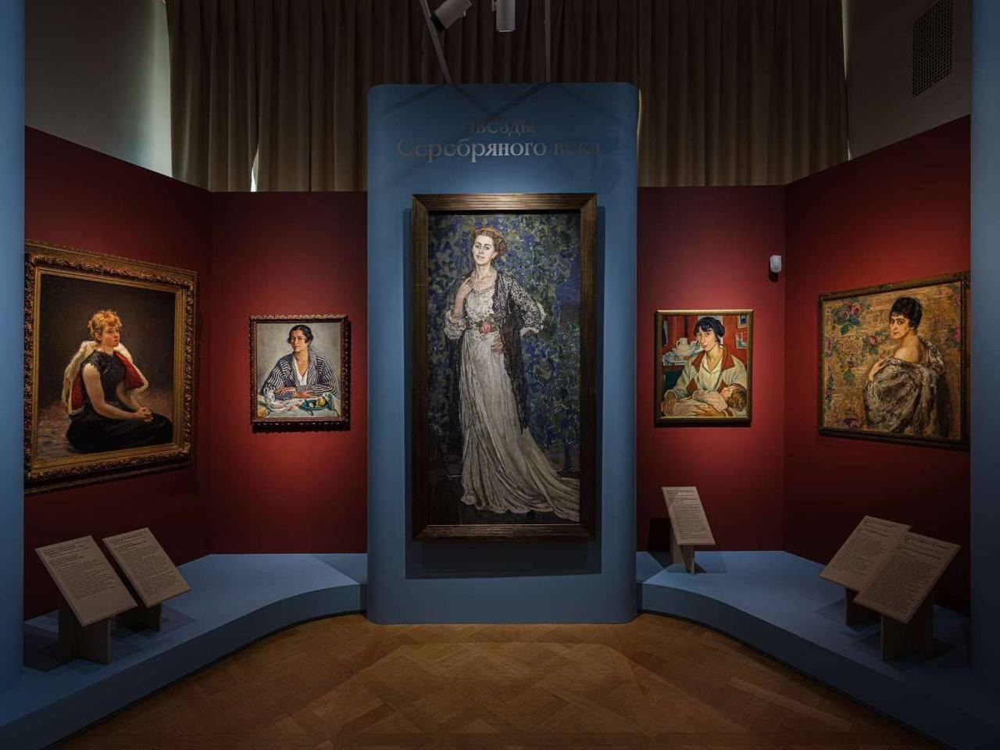
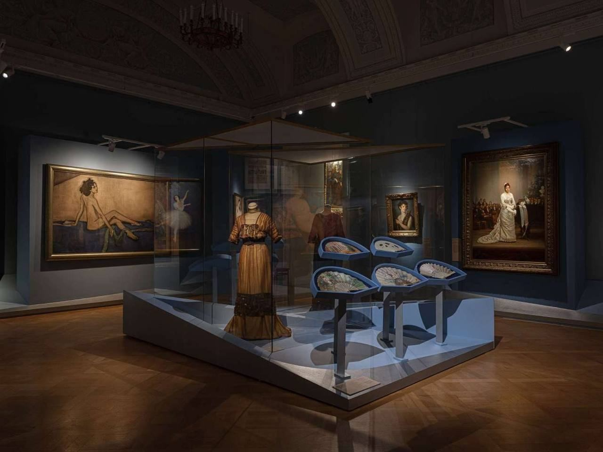

Великая
Выставочный проект Русского музея — отдельный кейс в портфолио.
- Роль
- Монтаж экспозиции
- Статус
- Реализация
- Автор
- Оксана Никитина

О проекте
Выставочный проект Русского музея — отдельный кейс в портфолио.
Фотографии показывают итоговую экспозицию и работу света с живописью, витринами и архитектурой залов.
